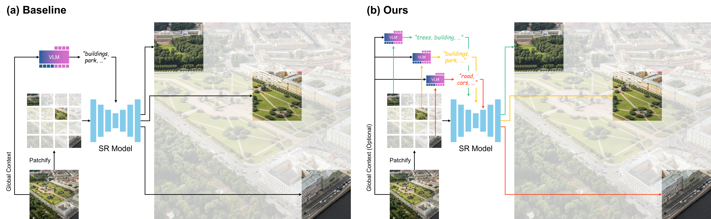
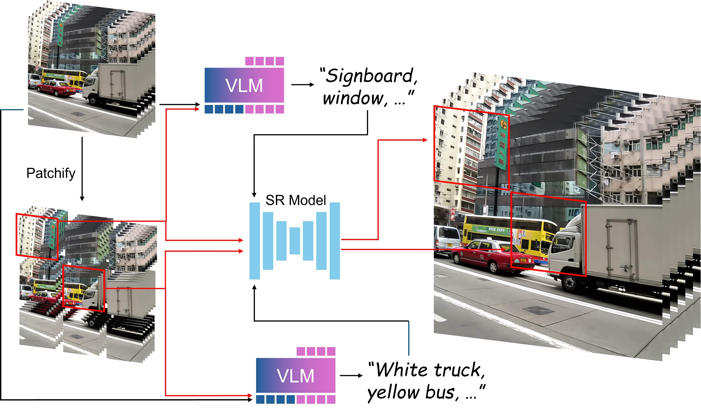

Text-conditioned diffusion models have advanced image and video super-resolution by using prompts as semantic priors, and modern super-resolution pipelines typically rely on latent tiling to scale to high resolutions. In practice, a single global caption is used with the latent tiling, often causing prompt misguidance. Specifically, a coarse global prompt often misses localized details (errors of omission) and provides locally irrelevant guidance (errors of commission) which leads to substandard results at the tile level. To solve this, we propose Tiled Prompts, a unified framework for image and video super-resolution that generates a tile-specific prompt for each latent tile and performs super-resolution under locally text-conditioned posteriors to resolve prompt misguidance with minimal overhead. Our experiments on high resolution real-world images and videos show that tiled prompts bring consistent gains in perceptual quality and fidelity, while reducing hallucinations and tile-level artifacts that can be found in global-prompt baselines.

(a) Baseline Methods. Conditioning super-resolution models solely on a single global text prompt demonstrates the problem of prompt misguidance. The global prompt, while broadly describing the image, proves insufficient to constrain the fine-grained super-resolution process.
(b) Tiled Prompts (Ours). Our framework leverages dense, context-aware tiled prompts for each region. This localized textual guidance provides precise semantic anchors, enabling the super-resolution model to produce significantly sharper, more coherent, and perceptually richer details.

Our Tiled Prompts framework for VSR divides the low-resolution video into a grid of spatio-temporal blocks (or volumes), where each block is tiled both spatially and temporally.
A VLM then analyzes the local video content and generates a detailed text prompt to guide the reconstruction of the specific block.